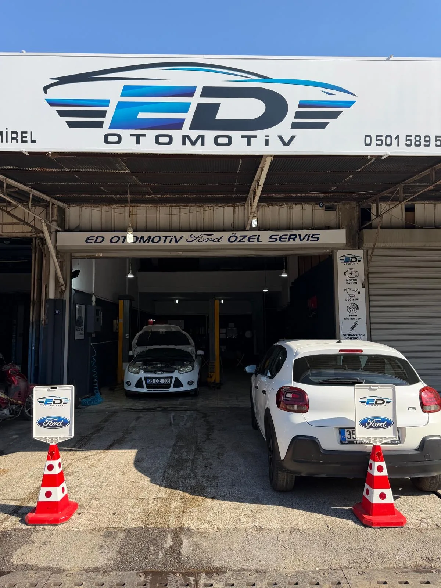
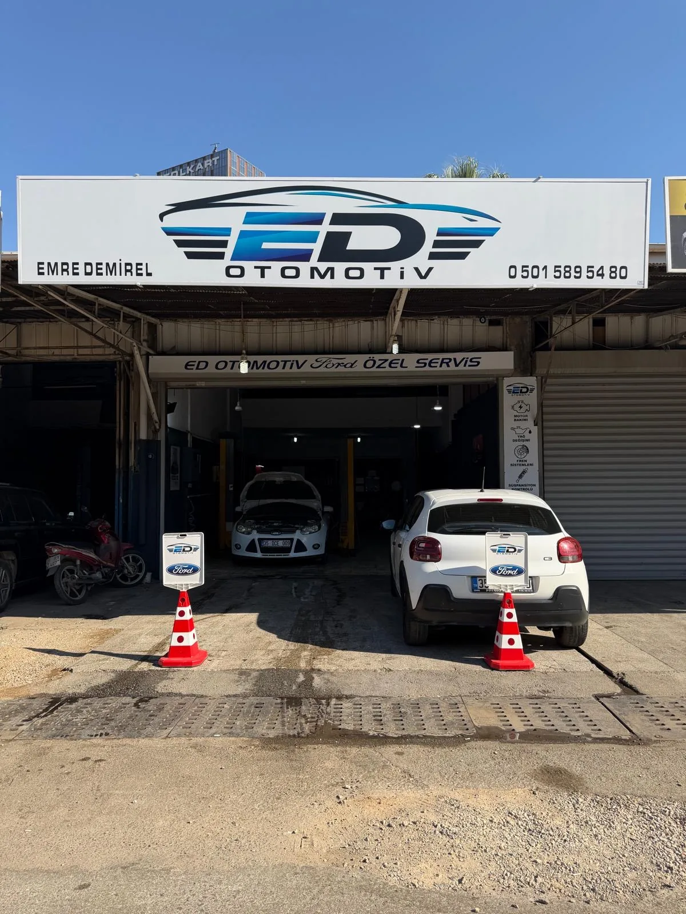

Periyodik Bakım
Yağ değişimi, filtre bakımı, bujiler ve üretici takvimlerine uygun tüm rutin bakım işlemleri.
Ford araçlarda uzman, tüm markalara açık. Emre Demirel ve ekibi, İzmir 3. Sanayi Sitesi'nde 15 yılı aşkın tecrübeyle aracınıza özenli hizmet sunar.
Özenli işçilik.
Güvenilir hizmet.
FORD · RENAULT · CITROËN · PEUGEOT · TÜM MARKALAR
Aracınızın ihtiyaç duyduğu bakımdan karmaşık mekanik sorunlara kadar uzman desteği.
Yağ değişimi, filtre bakımı, bujiler ve üretici takvimlerine uygun tüm rutin bakım işlemleri.
Motor arıza tespiti, revizyon, şanzıman onarımı. Karmaşık mekanik sorunlara kesin teşhis ve kalıcı çözüm.
Profesyonel OBD tarama ile arıza kod okuma, ECU kontrolü ve elektrik sistemi onarımı.
Fren balatası, disk, amortisör, rot, rotil ve süspansiyon sistemi komple kontrolü ve değişimi.
Klima gazı dolumu, kompresör kontrolü, kabin filtresi değişimi ve klima sistemi genel bakımı.

GERÇEK ATÖLYE · GERÇEK İŞÇİLİKTüm Ford modelleri — Focus, Fiesta, Transit, Ranger, Tourneo ve daha fazlası — için fabrika standartlarında tanı ve onarım. Orijinal ve OEM yedek parça garantisi.
Randevu için arayın ↗
ED OTOMOTİV · İZMİR 3. SANAYİEmre Demirel tarafından kurulan ED Otomotiv, İzmir 3. Sanayi Sitesi'nde köklü bir atölye geleneğinin temsilcisi olarak faaliyet göstermektedir. Renault, Citroën ve Peugeot dahil tüm otomotiv markalarına hizmet veren atölyemiz, özellikle Ford araçlarda uzmanlaşmış bir tamir ve bakım merkezi olarak öne çıkmaktadır.
Yıllarca biriken teknik bilgi, güncel teşhis ekipmanları ve müşteri güvenini öncelikli tutan çalışma anlayışımızla her müşterimize özenli, dürüst hizmet sunuyoruz. Acemi bir tüketici kafasıyla değil; gerçek bir ustanın gözüyle her araca yaklaşıyoruz.
“Showroom değil, atölye. Lüks değil, güven. Sanayi sitesinin gerçek ustası burada.”
Markaya özel sertifikalı teknisyenler ve güncel teşhis ekipmanları.
Orijinal ve OEM yedek parçayla kalıcı çözüm. Kısa vadeli tasarrufa değil kalıcılığa odaklanıyoruz.
Çalışma başlamadan önce yazılı teklif. Fiyat sürprizi yok.
İlk iletişimden araç teslimine kadar açık ve anlaşılır bir servis deneyimi.
İzmir 3. Sanayi Sitesi'ndeki atölyemize gelin ya da bizimle iletişime geçin.
Uzman teknisyenlerimiz OBD ve görsel incelemeyle tam arıza tespiti yapar.
İşe başlamadan yazılı fiyat teklifi sunulur. Onayınız olmadan hiçbir işlem yapılmaz.
Orijinal/OEM parçalar ve uzman ellerle hızlı, kaliteli onarım gerçekleştirilir.
Aracınız test edilip teslim edilir. İşçiliğe yazılı garanti belgesi verilir.
“Focus'umun motor arızasını tam olarak tespit ettiler, diğer servisler fark edememiş. Hem uygun fiyatlı hem de çalışma kalitesi harika. Emre abi gerçekten uzman biri.”
“Klima servisi için gittim. Her şeyi açıkladılar, fiyatı önceden söylediler. Hiç sürpriz çıkmadı. İzmir'de dürüst servis bulmak zor, bu yeri bulduğuma sevindim.”
“Süspansiyon takımı değişimini hızlı ve eksiksiz yaptılar. OBD tarama cihazlarıyla diğer sorunları da önceden gösterdiler. Güvenilir usta.”
“Şirket Transit'imizin periyodik bakımlarını burada yaptırıyoruz. Filo araçlarımıza özel ilgi gösteriyorlar, randevusuz da hızlı bakım imkanı sağlıyorlar.”
İzmir 3. Sanayi Sitesi
Bayraklı / İzmir
Pazartesi – Cumartesi 08:00 – 18:30
Pazar Kapalı
Randevu formu yok, bekleme yok. Arayın ya da WhatsApp'tan yazın — hemen dönüş yapıyoruz.